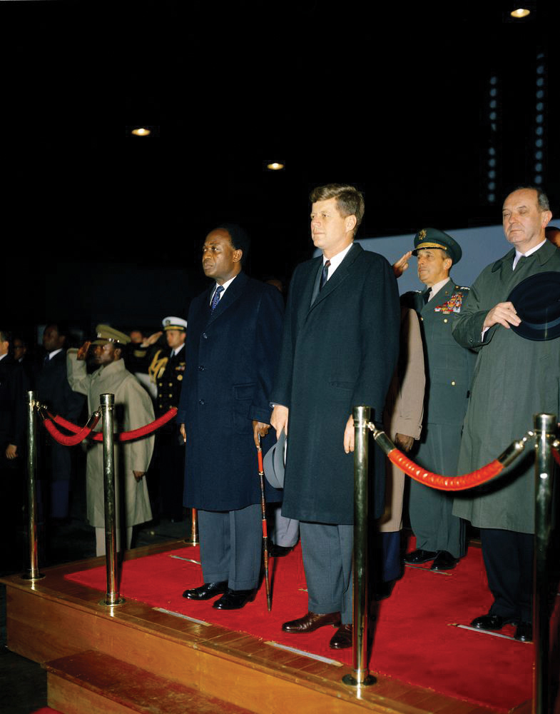
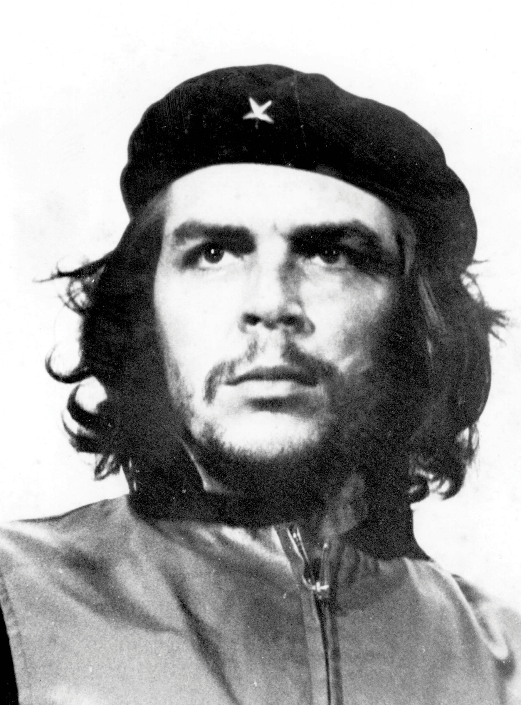
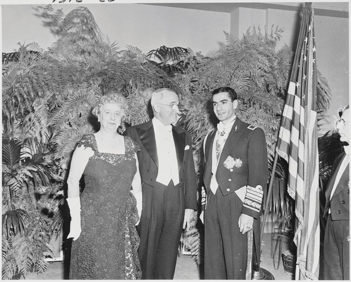
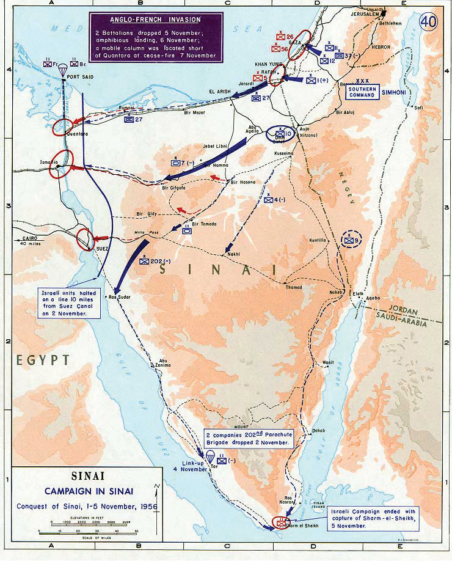
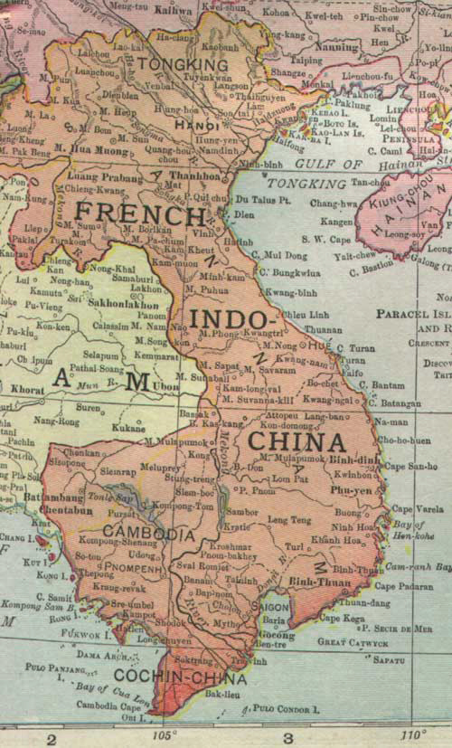
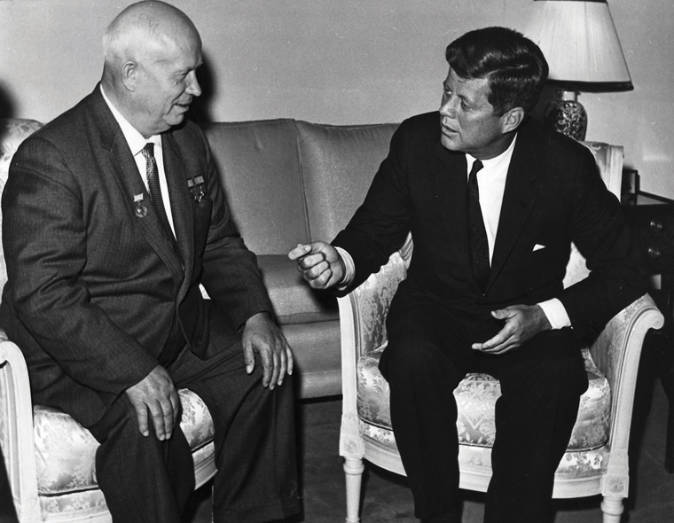

By the mid-1950s, both the United States and the Soviet Union had adopted a strategy they hoped would limit the influence of their rival. The Soviet Union, for example, backed the repressive North Korean regime of Kim Il Sung, despite the fact that Kim rejected many of the core principles of Marxism. At the same time, the United States compromised its own democratic ideals by propping up the autocratic Syngman Rhee in South Korea.
Rhee and other leaders of Third WorldA term referring to economically underdeveloped nations. Most of these nations were not aligned with either the United States or the Soviet Union during the Cold War. The term was used heavily during the second half of the twentiethth century, often in ways that implied backwardness and even inferiority. Today, scholars only use the term “Third World” in the context of contemporary perspective, preferring to use terms such as “developing nations” in most other contexts. nations (referred to today as “Developing Nations”) recognized that both US and Soviet leaders feared that the other’s political and economic system would spread if not contained. As a result, they created their own strategies aimed at manipulating Cold War tensions for their own gain. To secure economic and military aid from Moscow or Washington, these leaders sometimes adopted the role of pawns in constant danger of being toppled by the forces of Capitalism or Communism. If the Soviet Union wanted to prevent the spread of Capitalism, Kim Il Sung warned, it would have to provide generous support to North Korea else it fall to Syngman Rhee’s South Korea, which was backed by the United States. Syngman Rhee likewise convinced the United States to support his repressive but anti-Communist regime by playing to American fears about the imminent spread of Communism. This same pattern appeared throughout the Developing World.
Figure 10.1
Kwame Nkrumah was the first Prime Minister of independent Ghana and an influential African leader. Nkrumah is pictured with President Kennedy. However, most communications between Ghana and the United States were conducted by American diplomatic officials such as Ralph Bunche. Bunche advised the State Department on Africa and the Middle East and became the first person of color to win the Nobel Peace Prize.
Even developed nations found that they could utilize the Cold War to further their own objectives. For example, French leaders demanded that the United States support its efforts to reconquer its former colony of Indochina (Vietnam). If the United States refused, the French threatened to withdraw their support of NATO. For leaders in Korea and Vietnam who were dependent on US or Soviet military support for their very existence, this brand of high-stakes blackmail might be recognized as a bluff. In addition, gamesmanship was a dangerous strategy for both aligned and nonaligned leaders. In dozens of instances, US and Soviet forces worked covertly to have leaders of developing nations removed by aiding their political opponents or even by backing violent regime change. For example, the United States covertly aided a number of violent coups in Africa that were based on the often exaggerated fears that a particular government or leader might promote Communism.
Such fears were rarely based on credible research. The problem was especially severe in Vietnam, where few US officials who oversaw the distribution of economic and military aid spoke Vietnamese or French. Most had never even been to Vietnam. For this reason, many emerging nations of the “Third World” rejected the pressure to affiliate with Washington or Moscow. For people in these nations, alignment meant willingly becoming a pawn in the superpowers’ game. People in these nations understood that US and Soviet aid came at the cost of internal sovereignty, and they were unwilling to sacrifice their newly won independence even if they desperately needed economic aid or military support.
These sentiments culminated in actions taken in 1955 at the Bandung Conference in Indonesia. There, dozens of developing nations resolved to stay out of the Cold War. Together they created a new force—the Non-Aligned Movement. Led by African leaders such as Kwame Nkrumah of Ghana and Gamal Nasser of Egypt, as well as Asian leaders like Jawaharlal Nehru of India, the Non-Aligned Movement encouraged nations to resist the influence of both superpowers, reject military alliances, and refuse to permit the construction of foreign military bases on their lands. Leaders at the Bandung Conference cited recent American intervention in Latin America as a cautionary tale about the dangers of alignment. In 1954, an American-supported coup toppled the popularly elected but leftist government of Guatemala and installed a military junta that would be responsible for the deaths of hundreds of thousands of civilians over the next three decades.
As various former colonies won their independence in Africa, Asia, and Latin America, US officials were determined to prevent any of these “new” nations from “falling” to Communism. They believed that early intervention could prevent another conflict similar to the Korean War. However, many in these nations resented the generous bestowment of American aid to their imperial oppressors through the Marshall Plan following World War II. Because of the massive aid given to Europe, which helped to prop up their empires, it mattered little to residents of developing nations that the United States proclaimed and maintained neutrality in most of their postwar struggles for independence. For the millions of former colonists who fought for and secured independence from Britain, France, the Netherlands, and other European powers during the 1950s and 1960s, the United States could not be trusted because it had been the leading ally of those who opposed their freedom.
It might have been otherwise. Most Americans supported measures that transferred domestic sovereignty to Filipinos during the 1930s and celebrated the creation of an independent Philippines on July 4, 1946. In addition, many Americans made common cause with the people of India and Indonesia and cheered when both became independent nations in 1947 and 1949, respectively. In areas such as French Indochina, however, the United States actively thwarted independence, even after French forces abandoned the region in 1954 due to concerns about the possible spread of Communism.
In other cases, Americans reacted with disinterest as dozens of nations won their independence. Although African Americans sent millions of dollars to aid independence movements in various African nations, few white Americans or white political leaders were supportive of these efforts. For example, black Americans actively assisted the Mau Mau RevolutionA prolonged and violent anticolonial struggle waged by Kenyan nationalists seeking independence from Britain during the 1950s. Native Kenyans protested the policies of the British government and eventually won independence in 1963., which began in British East Africa in 1952. After eight years of costly battles, the British finally abandoned their former colony and recognized the independent nation of Kenya. While millions of African Americans related African decolonization with their own freedom struggle, US officials and leading media outlets usually ignored the African independence movement or denigrated the efforts of Africans in overtly racist terms. At best, US officials expressed interest in African affairs only as they affected business interests and the Cold War balance of power.
The same was true in southern and central Asia. Few Americans called for intervention in the violence that killed hundreds of thousands along the India-Pakistan border following British withdrawal from the region. Even when the State Department sponsored aid and antipoverty programs throughout the world, these efforts were often directed against the spread of Communism. However, US diplomats were also guided by genuine humanitarian concerns that were sometimes independent of geopolitical calculations. In each instance, recipients of aid were made to understand that it would be discontinued if a nation turned toward Communism or formed alliances with Communist nations. This was especially true of nations located in the Western Hemisphere.
Figure 10.2
Che Guevara was a physician who became one of Castro’s revolutionary leaders. Killed at an early age in support of the spread of revolutions throughout Latin America, Che soon became an international icon representing both machismo and Marxism.
Preventing rival nations from gaining control of Cuba had driven US foreign policy in the Caribbean since the declaration of the Monroe Doctrine in the early nineteenth century. Cuba’s location just ninety miles from the US mainland meant that Cuban affairs could impact national security. The United States tolerated the undemocratic rule of Fulgencio Batista because the Cuban dictator opposed popular Communist movements that sought to replace his regime. From the perspective of most Cubans, however, Batista was a foreign-backed dictator who was more concerned with profiting from his cozy relationships with American business leaders and organized crime bosses than with addressing the nation’s problems. Many Americans were horrified by the way Batista brutally suppressed dissent. Others argued that the United States should “look the other way” so long as most of his victims were members of left-wing groups. By 1958, however, US officials decided they could no longer support Batista’s brutal and dictatorial regime. At the same time, however, they feared that supporting Batista’s removal would result in his replacement by a young Communist revolutionary named Fidel CastroCuban revolutionary leader who overthrew the regime of Fulgencio Batista in the winter of 1958 to 1959. Castro would lead Cuba until 2008..
The thirty-two-year-old Castro led a revolution against Batista and seized power on New Year’s Day 1959. Castro’s victory was welcomed by many in Cuba—especially the poor. The energetic young leader’s popularity was rooted in his promises to improve conditions for workers and restore democratic rule. Yet Castro also faced many opponents. Landowners who had thrived under Batista feared that Castro’s support for Marxist doctrines would lead to their property being confiscated by the new government. In response to their protests, Castro executed hundreds of Batista’s supporters. Even Castro’s idealistic lieutenant Che Guevara, an iconic and globally revered Marxist revolutionary, sometimes assisted in the brutal elimination of Castro’s opponents. Castro also launched a failed offensive against the Dominican Republic, resulting in international condemnation.
Figure 10.3
President Truman and his wife greet the shah of Iran during one of his many visits to the United States. The Shah had been placed back in power by the United States and made a number of policies that favored Western interests. As a result, he was opposed by many Iranians and later removed from power once again.
Despite these abuses of power, Castro retained the support of most Cubans. He justified his actions as necessary to prevent a counterrevolution and bolstered his support among poor Cubans by promoting several wealth redistribution plans. For example, Castro passed a law prohibiting foreign investors and corporations from owning land on the island—a measure that resonated with landless farmers because the majority of Cuban farmland was controlled by US sugar companies. Castro’s laws required foreign-owned lands to be redistributed equally among the people of Cuba who would collectively run their own farms. Castro also forced the American owners of the island’s resorts and casinos to leave the country, citing their reputed connections with organized crime syndicates.
Castro had spoken out against Communism, which convinced US leaders to officially recognize Castro’s revolutionary government in 1959. However, Castro’s actions soon convinced Americans that his leadership was harmful to US business interests. Castro, they feared, was leading Cuba down the road to Communism. Congress responded with sanctions restricting travel to Cuba and banning the importation of sugar and other Cuban products. Cuba had been America’s sugar bowl and vacation spot since the Spanish were forced from the island in 1898. Now, US economic sanctions were wreaking havoc upon the Cuban economy, thereby threatening popular support for the new leader.
Castro understood that Cuba’s long-term economic progress was dependent upon trade with more prosperous nations. He also believed that he needed to build a powerful military that could defend his nation from internal and/or external enemies. When US officials blocked weapons sales between Europe and Cuba, Castro looked toward the Soviet Union. Cuba’s growing alliance with the Soviet Union provided a lifeline to the island and an outlet for trade. However, it also alarmed US officials who began to ponder ways that Castro might be removed from power. Meanwhile, Castro’s popularity with the Cuban people started to decline as the US embargo led to economic stagnation. Many people also opposed his brutal intolerance of dissent. Some of Castro’s original supporters even felt that he had betrayed their revolution and began to question whether they had replaced one authoritarian regime with another. Some of these critics, and especially those with connections to the former landowners who had benefitted from Batista’s rule, migrated to the United States with the aid of the CIA.
The CIA encouraged the arrival of Castro’s opponents because the agency was planning a secret mission to train and arm ex-Cubans for an invasion of the island. The CIA believed that a small and lightly armed force could overthrow Castro’s regime. Similar plans had worked in the past against the leftist government of Jacobo Guzman in Guatemala. In addition, a recent CIA-backed coup in Iran had successfully removed a leader who appeared hostile to US financial and strategic interests. Because of these apparent successes, US officials increasingly viewed covert operations as expedient, simple, and cost-effective. The CIA launched similar campaigns in the Congo, Brazil, and Ghana. However, as events in Cuba and Iran would later demonstrate, covert actions did not always work and often led to unintended consequences.
Demand for oil mixed with Cold War rivalry and the long-standing conflict between Israel and its Arab neighbors to produce a series of crises in the Middle East during the 1950s. In 1948, Israel had repulsed an attack by Egypt and Syria. In 1956, Egyptian leader Gamal Abdal Nasser resumed the offensive against Israel. Although the attack stalled, Egypt seized control of the Suez Canal from the British and French. However, the combined forces of Israel, Britain, and France quickly overwhelmed Egyptian fighters and threatened to invade Egypt and remove Nasser from power. The resulting conflict became known as the Suez Canal CrisisA 1956 conflict between Egypt and Israel and their allies following the seizure of the Suez Canal by Egyptian forces under Gamal Abdel Nasser. In response, Britain, Israel, and France threatened to invade Egypt. Eisenhower feared that this would draw the Soviet Union into the region and pressured these nations to withdraw troops. Control of the canal largely returned to the status quo. However, the resolution of the crisis made it clear that the United States had taken the place of Britain and France as the leading outside power in the Middle East..
Americans recognized that Nasser maintained the support of the Arab world. If the United States chose to come to the aid of France, Britain, and especially Israel, it risked losing Arab support throughout the oil-rich Middle East. Eisenhower was particularly concerned about Nasser’s ties to the Soviets, fearing that armed conflict in the Middle East would lead to Soviet intervention on Egypt’s behalf. If this happened, Eisenhower believed, the Arab world would view the Soviet Union as an ally, and the West might lose access to Middle Eastern oil.
Figure 10.4
A battle map showing the British, French, and Israeli forces moving westward across the Sinai Peninsula toward the Suez Canal. The canal was in Egypt but had long been controlled by the West.
Eisenhower was especially angry because he believed that the use of force by Britain and France increased the volatility of the crisis and betrayed earlier assurances from both nations that they would act in consultation with the United States. The United States supported Israel’s defensive maneuvers, but it opposed Israel’s later march into Egyptian territory. The president also shared the concerns of both Israeli and European leaders regarding the seizure of the Suez Canal. Eisenhower believed that diplomacy could best resolve the crisis. But he also relied upon nuclear deterrence by scrambling US forces in the region. In the end, the Soviet Union decided not to intervene, and each of the leading parties permitted Eisenhower and the United Nations to broker a deal that led to the withdrawal of forces and the reopening of the Suez Canal.
The Suez Crisis resulted in subtle, but significant, changes in the region. For example, the resolution of the crisis demonstrated that the United States had replaced Britain and France as the dominant Western power in the Middle East. Increased Arab hostility toward the Europeans for their direct military support of Israel allowed the United States to take a larger role in the region. Finally, although US financial support for Israel continued, the Soviet Union’s pledge to support Nasser against Israel and the West led many in the Arab world to move closer to the Soviet Union. In response, the United States increased military and economic aid to a number of nonaligned Middle Eastern nations. In addition, the President issued a statement that came to be known as the Eisenhower DoctrineA foreign policy statement by President Eisenhower in response to the Suez crisis. Eisenhower promised to send economic and military aid to any nation resisting attack by “any nation controlled by international Communism.” The intent was to assure Middle Eastern leaders that the United States would be their ally so long as they opposed Communism.. Ratified by Congress in 1957, the President’s statement declared that the United States would intervene militarily against any aggressive Soviet action aimed at spreading Communism in the Middle East.
France governed Vietnam, known then as French Indochina, as one of its colonies from the late 1800s until Japan seized control of the region during World War II. In 1930, a young Vietnamese nationalist named Ho Chi MinhA nationalist committed to the independence of his native Vietnam, Ho Chi Minh led forces against the French, Japanese, and United States. During World War II, he received assistance from the United States because both he and the United States were fighting against the Japanese. Due to his support of Communism, however, the United States opposed Ho Chi Minh’s later efforts to unite Vietnam under his leadership. He died in 1969. formed a Communist resistance group that sought independence and greater economic opportunities for landless farmworkers. After fleeing French Indochina for his life, Ho Chi Minh led the Vietnamese independence movement in exile until 1941, when the Japanese seized control of the region. He then returned to his homeland and, with US aid, formed a nationalist group called the Vietminh. The Vietminh fought for Vietnamese independence against the Japanese during World War II.
The United States supported the Vietminh at this time because the Americans were also fighting the Japanese. Once the Japanese surrendered in 1945, Ho Chi Minh declared Vietnam an independent nation and sought recognition and support from the United States. Ho’s top priority was to prevent the French from regaining control of their former colony. However, the United States refused to consider supporting a Communist leader against one of their most important Western allies. Instead, the United States ended its support of Ho Chi Minh and began to provide military aid to France. In exchange, the French promised to support American anti-Communist efforts in Europe. Equipped with supplies purchased by millions of American dollars and armed mostly with American-made weapons, French troops slowly drove the Vietminh north.
Eisenhower took control of the White House in 1952. The new president subscribed to Truman’s Domino Theory regarding Communism and decided to continue US efforts to aid the French against Ho Chi Minh. During this time, South Korea was able to stand fast against Communist North Korea only because of US aid. Eisenhower believed that the situation in Vietnam was similar. The President steadily increased support for France—so much so that Washington was eventually financing 80 percent of the French war effort. Despite this aid, Ho Chi Minh’s forces were prevailing over the French and maintained popular support. The French desperately appealed to Eisenhower, asking the former Allied Supreme Commander to use US bombers to attack Vietminh positions. However, Eisenhower opposed the idea of sending US troops to fight a war to restore French colonial rule. At the same time, he and other US leaders continued to provide military aid to the French because they feared the alternative was the spread of Communism under the leadership of Ho Chi Minh. In 1954, a major Vietminh offensive decimated French forces at Dien Bien Phu, near the Laotian border. Shortly after this defeat, the French began to remove their troops from the region.
At first, it appeared that Eisenhower would have to either send US forces to fight Ho Chi Minh or accept a Communist victory in Vietnam. Instead, the United Nations brokered an agreement that temporarily divided the nation. This agreement, known as the Geneva AccordsA 1954 agreement ending the war between France and the Vietnamese nationalists led by Ho Chi Minh. Although the Vietnamese hoped for full independence, they accepted a temporary division of the nation with the understanding that an election would be held in 1956. Under the Geneva Accords, the party that won this election would unify all of Vietnam under its leadership., placed the former French-backed emperor of Vietnam in charge of the southern portion of the country. Ho Chi Minh was placed in charge of the northern portion. Similar to the agreement that established a truce between North and South Korea, the Geneva Accords designated a line of latitude as a border between the two sides. Vietnam’s 17th Parallel was recognized as the temporary border until UN-supervised elections could be held in 1956.
Despite the often brutal tactics used by Ho Chi Minh and his lieutenants to compel both soldiers and civilians to submit to the will of the Vietminh, many Vietnamese revered Ho Chi Minh as a freedom fighter. In their view, Ho Chi Minh had dedicated the last three decades of his life to securing Vietnamese independence from both the French and the Japanese. In contrast, many viewed South Vietnam’s president, Ngo Dinh Diem, as a corrupt dictator who had conspired with the French. Ho Chi Minh also favored collective land ownership. This idea appealed to many landless peasants who were forced to work on land that was owned by a small number of wealthy families who had conspired with the French during the colonial era. At the time of the Geneva Accords, many of the landowners and the bureaucrats who helped to keep these families in power were Catholics who had also supported the French. The majority of Vietnamese were impoverished Buddhists.
Figure 10.5
Vietnam had a long history of colonial rule by outside powers. This 1913 map was made when Vietnam was a French colony known as Indochina.
Given the unpopularity of Diem and all other French-aligned leaders in the southern portion of Vietnam, American officials feared the majority of Vietnamese would vote to join both sections of the country together under Ho Chi Minh’s leadership. Diem recognized this and responded by thwarting the scheduled 1956 election. The Eisenhower administration recognized that, if an election were held in 1956, Ho Chi Minh would easily defeat Diem and supported this decision. Hoping to create a prosperous, non-Communist alternative to Ho Chi Minh in the north, the United States sent millions of dollars to assist Diem’s government. However, Diem squandered this aid and continued to preside over a government that was as oppressive as it was ineffectual. Nevertheless, the United States continued to send military advisers and equipment to help build up the South Vietnamese army. The hope was that Diem’s regime could somehow create a stable and prosperous economy that would provide the people of Vietnam with an attractive option to Ho Chi Minh’s Communist government based in the northern city of Hanoi. Instead, most of the funds went to Diem’s supporters, thereby increasing the alienation of the people of South Vietnam.
In 1957, Communist guerilla warriors struck targets throughout South Vietnam. Americans referred to these fighters—Communists who supported the North but lived in the non-Communist South—as the VietcongGuerilla warriors in South Vietnam who supported the Communist army of North Vietnam and its leader, Ho Chi Minh, against US forces and the army of South Vietnam during the Vietnam War.. Ho Chi Minh viewed the Vietcong as a vital part of his strategy to capitalize on popular resentment toward Diem’s government in Saigon. As a result, Ho provided the insurgents with virtually all of their weapons and supplies. Delivering those supplies to the South, however, was no easy task given the narrow border between North and South Vietnam. To reach the Vietcong, Communist forces used a secret network of trails that twisted around mountains and valleys of Laos, Cambodia, and Vietnam. This supply network eventually became known as the Ho Chi Minh TrailA network of paths and tunnels connecting North Vietnam and South Vietnam that was used to supply and transport Vietcong and North Vietnamese soldiers. Many of the paths in this network wandered into Laos and Cambodia, and none of them was visible from the air. As a result, it was very difficult for US and South Vietnamese forces to stop the movement of enemy troops and supplies..
Guerilla attacks continued to chip away at Diem’s support, but the United States had decided that it must either support Diem, despite his liabilities, or install another leader in his place who opposed Communism. While privately wishing that leaders within the South Vietnamese military would replace Diem with a more effective and democratic leader, US officials continued to provide aid to Diem’s government. By the end of Eisenhower’s presidency, US leaders had declared they would “sink or swim with Diem.” The federal government hoped that Diem’s government could somehow resist the increasing attacks by Ho Chi Minh’s Communist supporters while ending the corruption and oppression that had turned so many South Vietnamese against his regime.
Figure 10.6

French troops manning an American-made tank in Vietnam during the early 1950s. Many Vietnamese were skeptical about American intentions in Vietnam during the next two decades due to the American support of the French at this time.
The Soviet Union encountered a crisis of succession following the death of Joseph Stalin in 1953. After a number of internal disputes, Nikita KhrushchevA Soviet official who emerged as the leader of the Soviet Union shortly after Stalin’s death. As Soviet premier, Khrushchev tried to modernize the economy and reduce the widespread human rights abuses that had occurred under Stalin. In 1964, after the Cuban Missile Crisis, opponents in the Soviet Union forced his resignation. emerged in 1955 as the new Soviet premier. The following year, Khrushchev gave a speech that detailed the internal corruption and violent purges that had occurred under Stalin. The speech shocked many Communists, both within and outside of the Soviet Union. Khrushchev’s attempts to lift restrictions on intellectuals and artists, however, were cheered by many throughout the globe. Khrushchev also disbanded the secret police, which had been notorious for tormenting dissenters.
Some Americans welcomed these reforms as evidence that the Cold War might thaw under Khrushchev. However, the Soviet premier soon came under fire from some leaders in his country who criticized him as being too “soft” on the West. Khrushchev responded with a series of speeches that reaffirmed his status as a critic of the United States, including a statement that he intended to “bury” the West. When challenged by Western leaders to clarify his incendiary remarks, Khrushchev indicated that it was not the Russians whom Westerners should fear. Instead, Khrushchev predicted that members of the working class would revolt against the Capitalist system. “Of course we will not bury you with a shovel,” the Soviet premier explained, “your own working class will bury you.”
Over the next decade, the new Soviet government under Khrushchev experienced dramatic increases in industrial productivity and scientific advancement. For many residents of Eastern Europe, however, these Soviet advances did little to ameliorate their condition. Hyperinflation continued to take its toll on the economies of Eastern Europe. Although many had hoped that the death of Stalin would end the brutal repression of dissenters, the Communist governments of Eastern Europe rejected political reforms. Conditions in Hungary were among the worst in Eastern Europe. Hungary had been a part of Hitler’s Axis Powers, and its government had been forced to make annual reparation payments to the Soviet Union after the war. Between these payments and economic stagnation, conditions in Hungary steadily declined.
Throughout the 1950s, the Soviet-backed Hungarian Communist Party ran unopposed in elections and brutally attacked intellectuals and others who dared to criticize the regime. In the summer of 1956, a revolt in Poland inspired students and workers in Hungary to also demonstrate in favor of democratic reform in their nation. Despite an initial crackdown by the Soviet-backed Polish government, a number of modest reforms had been passed in Poland. Seeking similar results, college students in Hungary launched what became known as the Hungarian Revolution of 1956A 1956 national uprising by Hungarians seeking an end to Soviet domination. The Soviet Union utilized garrisons of soldiers stationed in Hungary as well as additional troops to crush the uprising, remove the upstart Hungarian government, and reinstall a Communist régime that followed the leadership of the Soviet Union.. That October, protesters took to the streets and attacked symbols of Soviet authority, such as a massive statue of Stalin. Soviet forces, which had been garrisoned throughout Hungary since the end of World War II, were quickly besieged by Hungarian revolutionaries in nearly every city and negotiated a ceasefire. In the next ten days, Hungarian leaders established their own provisional government and disbanded the secret police. The new government immediately withdrew from the Warsaw Pact and sought new partnerships with the West.
Many Hungarians hoped that their new government might follow the example of nonaligned nations such as Austria. Hungary’s new leaders directed their diplomatic efforts toward seeking help from the United Nations to maintain their newly won and precarious independence. The provisional government pointed out that thousands of Soviet troops remained in their nation, despite Moscow’s promise of a total withdrawal. However, the United Nations recognized the volatility of the situation and refused to take action. Eisenhower’s advisers cautiously suggested that the President mobilize US troops to demonstrate support for Hungary’s attempted escape from the Communist Bloc. Instead, Eisenhower followed the course of the United Nations and refused to intervene. With tensions between the United States and Soviet Union already high due to the Suez Crisis, Eisenhower was reluctant to send troops into Soviet-dominated Eastern Europe.
Eisenhower feared that US intervention would force a tougher Soviet response. Perhaps if the United States and the UN had remained neutral, some advisers believed, Soviet leaders would not feel compelled to intervene, either. Khrushchev might permit Hungary to hold special elections if it could appear as though the Soviets were in control of the situation, US leaders believed. Intervention would destroy such a façade and might convince the Kremlin that a harsh demonstration of Moscow’s resolve was needed.
While American leaders debated strategies, Eisenhower’s window of time to support Hungary quickly closed. After just ten days, more than twenty armored divisions from the Soviet Union entered Hungary and surrounded the capital. The interim government was overpowered and replaced by a pro-Soviet government that immediately rejoined the Warsaw Pact. Thousands of Hungarians had perished during the attempted revolution, and more than 10,000 were imprisoned. Another 200,000 fled the country. The violent response that ended the Hungarian Revolution served as a warning for other Eastern European nations that might seek independence. It also demonstrated that the death of Stalin would not result in greater political autonomy for the peoples of Eastern Europe.
Soviet leaders had made it clear that they would not permit Hungary—or any other Eastern European country—to leave its sphere of influence. Shortly afterward, however, Khrushchev began to signal possible changes in foreign policy. In subsequent years, he gave several speeches in which he called for “peaceful coexistence” with the West. Eisenhower responded in 1959 by sending Vice President Richard Nixon to visit Moscow—the first official visit of any presidential administration to the Soviet Union since the beginning of the Cold War.
Figure 10.7
President Kennedy meets with Nikita Khrushchev in Vienna, Austria, in 1961. Although relations remained tense, the “Kitchen Debate” in Moscow between Khrushchev and Nixon opened the door for better communication between the leaders of the United States and the Soviet Union.
The occasion of Nixon’s journey was the opening of the American Exhibition—a display of numerous American cultural artifacts and manufactured goods. A highlight of the exhibit was a model home designed to showcase the comfort and affluence Americans enjoyed. Nixon and Khrushchev toured the home together while cameras recorded their conversation. Historians have labeled the exchange between the two men the “Kitchen Debate,” because most of their polite but tense conversation took place in the model home’s kitchen.
Although the American exhibit featured numerous works of art and culture, Khrushchev keyed in on the ways the model home emphasized materialistic values he believed were typical of the Capitalistic West. Nixon, too, said little about American contributions to art and culture, responding instead by lauding his nation’s material affluence in ways that hinted his belief that Soviet families endured a lower standard of living. In the end, the famed debate featured little in the way of substantive deliberation. However, both leaders emphasized their desire to continue the conversation and improve relations between their countries.
The Soviets sent an exhibit to New York that same summer. Nikita Khrushchev traveled to the United States for a thirteen-day tour in August. The Soviet premier visited a number of cities on the east and west coasts and briefly toured Pittsburgh and an Iowa farm. Although Khrushchev’s request to tour Disneyland was denied for security reasons, his trip went smoothly and inspired hope that the two nations might move beyond anxious pleasantries and move toward more substantive matters. Chief among these issues was concern over the growing nuclear arsenals that both nations possessed.
The highlight of the 1959 Soviet exhibit in New York was a replica of a small satellite named SputnikThe first satellite launched into space. Launched by the Soviet Union on October 4, 1957, Sputnik successfully orbited Earth and ushered in the space race—a scientific competition for supremacy in space exploration between the United States and the Soviet Union.. In October 1957, Sputnik became the first man-made satellite to orbit the globe. US scientists had made several attempts to launch a satellite that same year, but none of these early spacecraft managed to make it outside the atmosphere. In fact, many spiraled dangerously out of control. The fledgling US space program was increasingly criticized when Soviet scientists successfully launched a second satellite, Sputnik II. This satellite weighed more than 1,000 pounds and carried a live passenger—a dog named Laika. Americans expressed indignation that Soviet scientists did not provide a way for Laika to survive her entire space journey, but their own launch attempts were even shorter-lived. One rocket did little more than lean over and fall from its launch pad. The media dubbed this US satellite the “Stayputnik.” Finally, on the last day of January 1958, US scientists successfully launched a satellite named Explorer into orbit.
Figure 10.8

The canine cosmonaut Laika became the first casualty of space exploration after being launched inside of the Sputnik II satellite.
The American media expressed mild panic when the Soviets demonstrated such a commanding early lead in the space race. Some feared that Soviet satellites armed with nuclear bombs would soon be hovering in orbit above American cities. Recognizing the scientific limitations of using satellites as bombers, and believing that American initiative would soon outpace his Soviet rivals, Eisenhower counseled that Moscow’s space program had set an important precedent that could actually benefit US strategists. By being the first to launch a satellite that orbited the globe, the Soviets had effectively agreed that national borders did not extend to the heavens. While sending US spy planes into Soviet airspace might be considered an act of war (an issue that would soon increase tensions between the two nations), the fact that the Soviets had launched a satellite that orbited the globe without consulting the United States meant that US scientists could do likewise. Eisenhower envisioned satellites capable of tracking Soviet naval vessels and even spying directly on the Soviet homeland.
Congress responded to the Soviet space program by increasing funding for research and development programs. Further action was taken to consolidate existing aeronautical research programs into the National Aeronautics and Space Administration (NASA). Congress also passed the National Defense Education Act. This law provided direct funding for colleges to promote math, science, and engineering as well as foreign languages and area studies. The name of the law signified the government’s view that maintaining the world’s premiere system of higher education was vital to national security. A relatively small amount of funding was also included to provide loans for students who needed financial assistance to attend college. Little noticed at the time, the National Defense Student Loan Program inspired the much larger federal loan programs that presently assist millions of students who otherwise could not afford to attend college or purchase textbooks.
Though significant, government funding for education and many other domestic programs was overshadowed by annual expenditures for defense. President Eisenhower, a military hero and staunch advocate of national defense, viewed the nation’s skyrocketing military spending as a threat to the continued economic well-being of the nation. In an era of Cold War fears, those who called for reductions in military spending were often accused of being “soft on Communism.” As a result, it was significant that a leader of such unimpeachable military credentials as Eisenhower took the lead on this issue.
The President reasoned that it would be much cheaper to maintain a nuclear arsenal strategically located around the globe than match the size of the massive Red Army with its millions of soldiers. Secretary of State John Foster Dulles agreed. However, the Secretary of State also pointed out that for nuclear deterrence to work, the world had to believe that the United States really would respond to an attack of conventional forces by launching nuclear weapons. As a result, Dulles publicly announced that any attack against the United States would be met with an immediate and direct nuclear assault on that nation. In theory, this strategy of “massive retaliation” was little more than a public acknowledgement of Eisenhower’s existing strategy of nuclear deterrence.
Another key piece of the nuclear deterrence strategy was to make it apparent that the Soviets could not launch a first strike that would destroy America’s ability to retaliate. Eisenhower and Dulles committed the nation to massive retaliation by constructing an elaborate system based on maintaining second-strike capabilityThe ability of a nation to launch a significant number of nuclear weapons at an aggressor in retaliation for a nuclear attack, no matter how severe that first attack might have been. It stood as a significant measure of a nation’s nuclear deterrence.. By 1960, the United States had decreased overall military spending, but it had increased its number of nuclear warheads to 18,000. The United States also expanded its capacity to instantly deliver those warheads to targets around the globe.
The Strategic Air Command (SAC) of the US Air Force maintained squadrons of bombers armed with nuclear missiles in the skies twenty-four hours a day. The navy deployed fleets of submarines on secret missions throughout the globe—all armed with nuclear missiles and capable of hiding underwater for months at a time. Finally, the United States built top-secret nuclear silos hidden deep underground throughout the nation and on US military bases around the world. Such actions made it clear that even if the Union of Soviet Socialist Republics (USSR) launched its entire arsenal of nuclear weapons (which soon exceeded 20,000 warheads), it could not hope to neutralize the thousands of missiles that were in the skies, underwater, and hidden deep underground. Defenders of massive retaliation argued that such mutually assured destruction would prevent any nuclear attack. Eisenhower’s critics labeled the President’s reliance on nuclear deterrence as a policy of “brinksmanship.” These critics argued that Eisenhower’s willingness to rely on nuclear deterrence increased the likelihood that any war, or even a mishap, could lead to the extermination of all life on earth.
The possibility of global annihilation became an increasing concern as both nations developed massive nuclear arsenals composed of weapons that were hundreds of times more powerful than the bombs dropped at Hiroshima and Nagasaki. To maintain their arsenals, both nations performed hundreds of nuclear tests underground, underwater, and even on the ground. Each of these atmospheric tests spread nuclear fallout, and scientists documented spikes in radiation levels that spread far beyond the isolated test sites.
Civilian protests and international condemnation led both sides to consider limiting atmospheric tests. In the United States, activists formed the Committee for a SANE Nuclear Policy (SANE)The leading organization calling for an end to atmospheric testing of nuclear weapons and global disarmament. It was formed in 1957 in response to increased levels of radiation resulting from nuclear tests. in 1957. SANE’s goal was to raise awareness of the dangers of nuclear proliferation and atmospheric testing. These activists were aided in their cause by increased diplomatic communications between the United States and the Soviet Union during the late 1950s. In 1958, the United States, Great Britain, and the Soviet Union agreed to a temporary ban on atmospheric testing. Plans were also made to discuss mutual reductions in the number of nuclear weapons each nation possessed. However, this apparent thaw in the Cold War would prove short-lived.
In 1960, the Soviet Union shot down a US spy plane that had violated its airspace. President Eisenhower initially denied that the United States sponsored spy missions over Soviet territory. However, the President was soon forced to admit culpability when Moscow produced photographs of the captured pilot. Ironically, Eisenhower had considered ending all surveillance flights over the Soviet Union to prevent such a possibility, only to be convinced otherwise by his subordinates. After the incident, relations between the two nations quickly declined. Even an agreement to exchange the pilot for a captured Soviet agent did little to reduce these tensions. Criticized by many in his nation for what they perceived as weakness on the part of the Soviet premier, Khrushchev responded with a bellicose denouncement of the United States for its violation of Soviet airspace and refused to consider any future discussions about nuclear disarmament.
The thaw in relations that many had hoped would take place following Stalin’s death was no longer in the forecast. Instead, both nations resumed atmospheric tests in the fall of 1961, which prompted macabre meteorologists to include radiation levels among their weather predictions. The change prompted SANE and an army of celebrities and activists to rally behind the cause of limiting nuclear testing. Because of their efforts, the United States, Britain, and the Soviet Union agreed to the 1963 Partial Test Ban Treaty, which once again banned atmospheric tests. The treaty remains in effect, with only France, China, and North Korea conducting tests beyond the underground experiments the treaty permits.